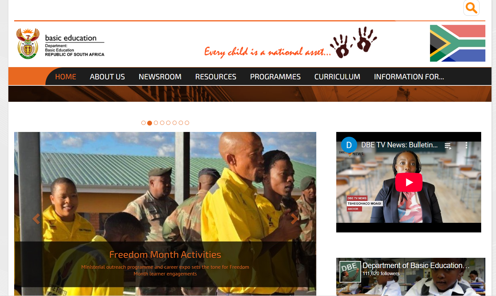
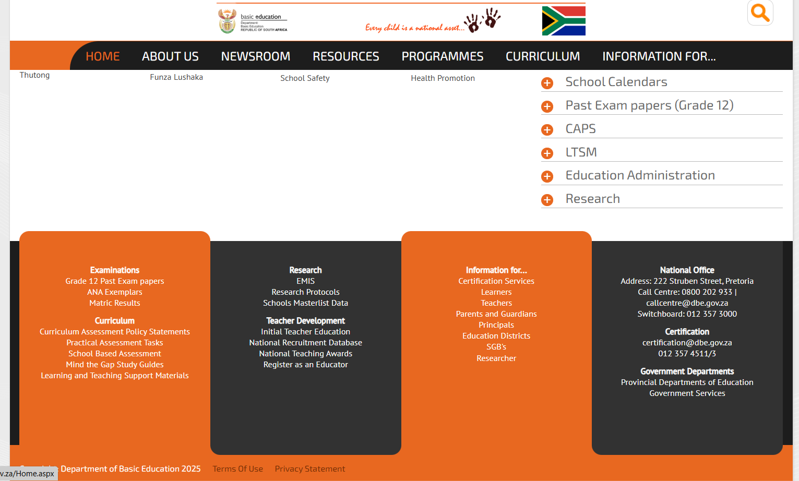

Week 7 - Blog Post
31 March, 2025
The website I chose is:
The Department of Basic Education website


Pros:
1. This website comes in handy for matriculants and learners in high school in terms of accessibility. They are able to easily access past exam papers and memorandums which are vital and helpful to them in preparing for upcoming examinations.
2. This site offers comprehensive content to students, teachers and parents. There are plenty of resources that are informative and helpful such as previous past papers, memorandums, curriculum guidelines, activities and rubrics.
Cons:
1. Unclear navigation: This websites design is complex making it difficult for users to find specific information or content.
2. Mobile responsiveness: Using this site on a mobile phone is an underwhelming experience as it is not completely optimised to cater for gadgets such as phones and tablets. This should be fixed as not everyone has access to a laptop.
3. The site proves that there is a lack of it being updated regularly due to duplicate headings such as “2019 Media Releases”. It is vital for websites to be maintained and updated especially in different years to avoid confusing users.